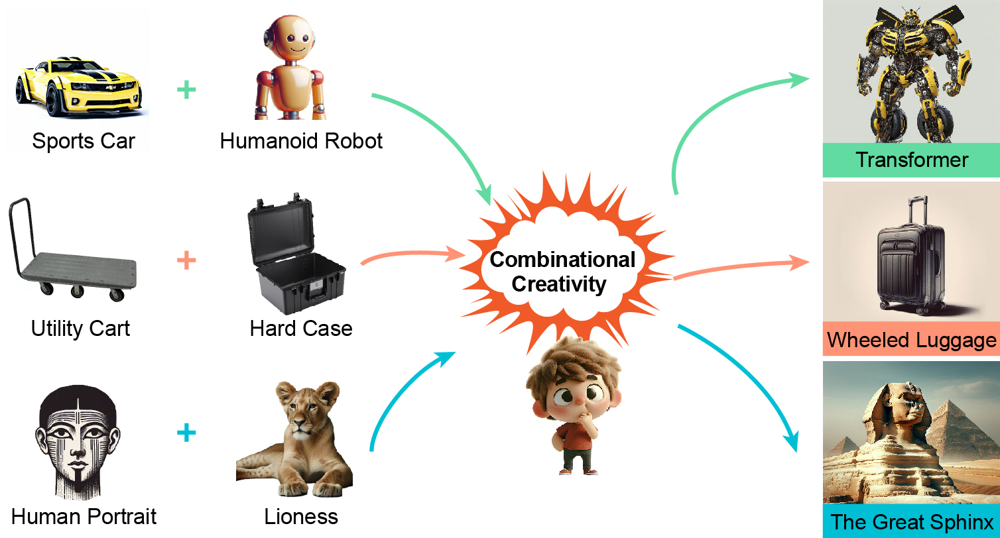

 |
Probing and Inducing Combinational Creativity in Vision-Language Models
Yongqian Peng*,
Yuxi Ma*,
Mengmeng Wang,
Yuxuan Wang,
Yizhou Wang,
Chi Zhang,
Yixin Zhu✉️,
Zilong Zheng✉️
CogSci, 2025 (Talk)
[Abs]
[Paper]
[Slide]
[arXiv]
[Project]
[Code]
[Data]
[Video]
The ability to combine existing concepts into novel ideas stands as a fundamental hallmark of human intelligence. Recent advances in Vision-Language Models (VLMs) like GPT-4V and DALLE-3 have sparked debate about whether their outputs reflect combinational creativity—defined by M. A. Boden (1998) as synthesizing novel ideas through combining existing concepts—or sophisticated pattern matching of training data. Drawing inspiration from cognitive science, we investigate the combinational creativity of VLMs from the lens of concept blending. We propose the Identification-Explanation-Implication (IEI) framework, which decomposes creative processes into three levels: identifying input spaces, extracting shared attributes, and deriving novel semantic implications. To validate this framework, we curate CreativeMashup, a high-quality dataset of 666 artist-generated visual mashups annotated according to the IEI framework. Through extensive experiments, we demonstrate that in comprehension tasks, best VLMs have surpassed average human performance while falling short of expert-level understanding; in generation tasks, incorporating our IEI framework into the generation pipeline significantly enhances the creative quality of VLMs outputs. Our findings establish both a theoretical foundation for evaluating artificial creativity and practical guidelines for improving creative generation in VLMs.
tl;dr: We systematically investigate the combinational creativity of VLMs through the lens of conceptual blending, proposing a novel framework and dataset to evaluate their comprehension and enhance their creative generation capabilities.
|
|
Cognitive Reasoning (CoRe) Lab, Institute for Artificial Intelligence, Peking University, China
July 2023 - Present
Student Researcher
Advisor: Prof. Yixin Zhu
|
|
Peking University, China
Aug 2021 - Present
Undergraduate Student
|
|